Setting up and debugging custom fonts
June Choe ![]()
This blog post was featured in the R Weekly highlights podcast! Thanks to the R Weekly team for the comprehensive review!
Introduction
Getting custom fonts to work in R has historically been pretty difficult.1 At a high level, it involves the non-trivial task of unifying the graphics device, the operating system, and text rendering, (and also in our case, R!) to seamlessly work with each other.
Luckily for us in post-2021, we have an amazing solution to this problem
thanks to recent developments in the {ragg},
{systemfonts}, and {textshaping} packages by
RStudio. This is great news because a lot of the work for getting custom
fonts to work in R is already done for us!
In this blog post, I’ll start with the basics of setting up custom fonts followed by a walkthrough of the font debugging workflow, concluding with some practical use-cases that can spice up your typography game for data viz.
Disclaimer for {showtext} and {extrafont} users
Many people are familiar with {showtext} and {extrafont}, and may even have existing workflows centered around those packages. In this blog post, there is no “installing” of fonts of any sort within the R session. The magic here is that {ragg} is designed to directly access the fonts installed on your system (with some caveats which I’ll discuss later). This issue of the graphics device is independent of the kind of things that {showtext} and {extrafont} does, which is why they’re not relevant here.
So if you want to adopt this font workflow don’t use {showtext} and don’t use {extrafont}.
Setting up {ragg}
The first thing you should do, if you haven’t already, is to install {ragg}, {systemfonts}, and {textshaping}.
install.packages('ragg')
install.packages('systemfonts')
install.packages('textshaping')
Next, we want to make sure that whenever we output a plot2, we do so using the AGG graphics device (that’s the “agg” part of “ragg”).
There are a couple places where this is relevant:
1. Rendering in RStudio plot pane
For RStudio >= 1.4, go to Tools > Global Options > General > Graphics and set the Backend to AGG.

Figure 1: Where to set AGG as the graphic device for RStudio - image from https://ragg.r-lib.org
2. Saving as an external file
For bitmap output, use any of the ragg::agg_*() function
to render plots using the AGG device.
For ggplot2 figures: as of the new ggplot2
v3.3.4 release (released 06-16-2021), ggsave()
automatically defaults to rendering the output using
agg_*() devices!
Old disclaimer for {ggplot2} < v3.3.4
This long-winded way works for any plot, but if you use{ggplot2} and ggplot2::ggsave() a lot, you
might wonder whether you can just pass in ragg::agg_png()
into the device argument and specify the arguments in
ggsave() instead. This turns out to actually not be so
straightforward, but will likely be patched in the next update
(v3.3.4?). 3
3. Rmarkdown
To render figures with {ragg} in knitted files, pass in
a ragg device has res and units specified to
the dev argument of knitr::chunk_opts$set() at
the top of the script.4
ragg_png <- function(..., res = 150) {
ragg::agg_png(..., res = res, units = "in")
}
knitr::opts_chunk$$set(dev = "ragg_png")For rmarkdown chunks that are executed inline (i.e., figures under code chunks), there’s unfortunately no straightforward solution to get them rendered with ragg. My current suggestion is to set chunk output option to “Chunk Output in Console”, instead of “Chunk Output inline” under the gear icon next to the knit button in the rmarkdown toolbar.
If you’re a diehard fan of inline-ing your plots as you work with your rmarkdown document, keep an eye out on issue #10412 on the RStudio IDE github repo. If you want a hacky workaround in the meantime, try out some of the suggestions from issue #9931.
4. Quarto
In quarto, you can set the custom ragg_png device
(defined above) in the YAML, like so:
knitr:
opts_chunk:
dev: "ragg_png"
This essentially calls
knitr::opts_chunk$set(dev = "ragg_png").
Note that the dev argument does not go under
execute, which instead controls chunk execution options
like echo and eval.
5. Shiny
Simply set options(shiny.useragg = TRUE) before
rendering. Also check out the {thematic} package for
importing/using custom fonts in shiny plot outputs.
Installing custom fonts
Now that you have {ragg} and {systemfonts}
installed, take it for a spin with a custom font! When you’re rendering
plots using {ragg}, custom fonts should just work
as long as you have them installed on your local machine.
If you haven’t really worked with custom fonts before, “installing a custom font” simply means finding the font file on the internet, downloading it, and drag-and-drop into a special folder on your local machine. It’s something like Network/Library/Fonts for Macs and Microsoft/Windows/Fonts for Windows. There can actually be a bit more to this process5, so make sure to google and check the process for installing fonts on your machine.
Finding the right file
Font files come in many forms. In general, fonts files that match these two criteria tend to work the best:
Fonts in .otf (OpenType Font) or .ttf (TrueType Font) formats. These are font formats that are installable on your local machine. You want to avoid other formats like .woff or .woff2, for example, which are designed for use for the web. In theory both .otf and .ttf should work with
{ragg}, though I’ve sometimes had trouble with .otf. In those cases, I simply converted the .otf font file to .ttf before installing it, using free online conversion tools that you can easily find on Google. I’m of course glossing over the details here and I’m hardly an expert, but you can read more about TrueType and OpenType formats here.Static fonts. In static fonts, each member of the family has their own set of glyphs (i.e., there is a font file for each style). This is in contrast to variable fonts, where you have a single font file which can take the form of multiple styles (either by having many sets of glyphs or variable parameters).6 To illustrate, look at the difference between the static (top) vs. variable (bottom) files for the Alegreya family.
Figure 2: Static font files for Alegreya
Figure 3: Variable font files for Alegreya
We see that static fonts are differentiated from variable fonts by having a distinct file for each style, like Alegreya-Black.ttf. On the other hand, variable fonts usually say “variable” somewhere in the file name, and are slightly larger in size than any individual static member. Note that not all fonts have both static and variable files, and not all static font files are .ttf (there can be static .otf and variable .ttf files).7


The above two images show the contents of the .zip file that you’d get if you went to Google Fonts (an awesome repository of free and open-source professional fonts) and clicked the Download family button on the page for Alegreya. If you want to use the Alegreya font family (Open Font License8) in R, then you simply drag-and-drop all the static font files in /static into your system’s font folder (or in Settings > Fonts for Windows 10).
Checking that a font is installed and available
Once you install a custom font on your system, it should also be available elsewhere locally on your machine. For example, I can use Alegreya in Microsoft Word after I download it (this is actually my first go-to sanity check).
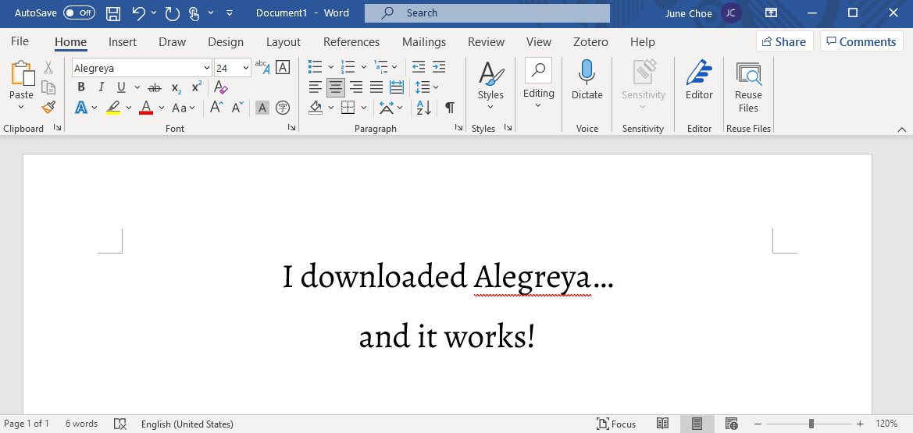
Figure 4: Alegreya in Microsoft Word
And by extension Alegreya should now be available for figures
rendered with {ragg}. Let’s try using Alegreya in ggplot by
passing it to the family argument of
geom_text()
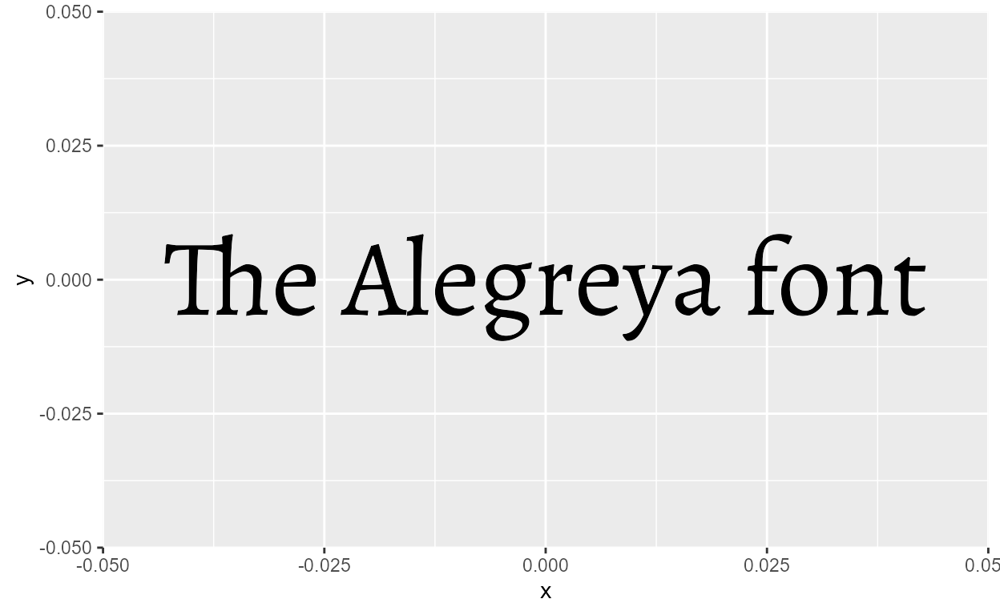
It just works!
More specifically, it works because Alegreya is visible to
{systemfonts}, which handles text rendering for
{ragg}. If we filter list of fonts from
systemfonts::system_fonts(), we indeed find the 12 styles
of Alegreya from the static .ttf files that we installed!
library(systemfonts)
library(dplyr)
library(stringr)
system_fonts() %>%
filter(family == "Alegreya") %>%
transmute(
family, style,
file = str_extract(path, "[\\w-]+\\.ttf$")
)
# A tibble: 12 × 3
family style file
<chr> <chr> <chr>
1 Alegreya Black Italic Alegreya-BlackItalic.ttf
2 Alegreya Bold Alegreya-Bold.ttf
3 Alegreya Bold Italic Alegreya-BoldItalic.ttf
4 Alegreya ExtraBold Alegreya-ExtraBold.ttf
5 Alegreya ExtraBold Italic Alegreya-ExtraBoldItalic.ttf
6 Alegreya Italic Alegreya-Italic.ttf
7 Alegreya Medium Alegreya-Medium.ttf
8 Alegreya Medium Italic Alegreya-MediumItalic.ttf
9 Alegreya Regular Alegreya-Regular.ttf
10 Alegreya SemiBold Alegreya-SemiBold.ttf
11 Alegreya SemiBold Italic Alegreya-SemiBoldItalic.ttf
12 Alegreya Black Alegreya-Black.ttfDebugging custom fonts
So far we’ve seen that the workflow for setting up and installing fonts is pretty straightforward. But what do we do in times when things inevitable go wrong?
Consider the case of using Font Awesome, an icon font that renders special character sequences as icon glyphs (check the Icon fonts section for more!). Font Awesome has a free version (CC-BY and SIL OFL license), and let’s say we want to use it for personal use for a TidyTuesday submission.
The first thing we do is locate the font file. Font Awesome is open source, and the free version (Font Awesome 5 Free) is updated on Github. The most recent release as of this blog post is v5.15.3. If you unzip the file, you’ll find .otf font files corresponding to the three variants available in the free version: Regular, Solid, and Brands.
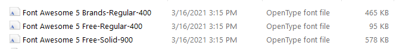
Figure 5: Font Awesome 5 files
Remember how I said R tends to play nicer with .ttf than .otf fonts?9 Lets go ahead and convert the .otf files using an online converter, like https://convertio.co/otf-ttf. Now, with the three font files in .ttf format, follow the instructions for installing fonts on your OS.
Once Font Awesome is installed on our local machine, it should be
visible to {systemfonts}, like this:
system_fonts() %>%
filter(str_detect(family, "Font Awesome 5")) %>%
transmute(
family, style,
file = stringr::str_extract(path, "[\\w-]+\\.ttf$")
)
# A tibble: 3 × 3
family style file
<chr> <chr> <chr>
1 Font Awesome 5 Free Solid Font-Awesome-5-Free-Solid-900.ttf
2 Font Awesome 5 Brands Regular Font-Awesome-5-Brands-Regular-400.ttf
3 Font Awesome 5 Free Regular Font-Awesome-5-Free-Regular-400.ttfNow let’s try plotting some icons!
We see that we can render icons from the Regular variant (“clock”) and the Brands variant (“twitter”).
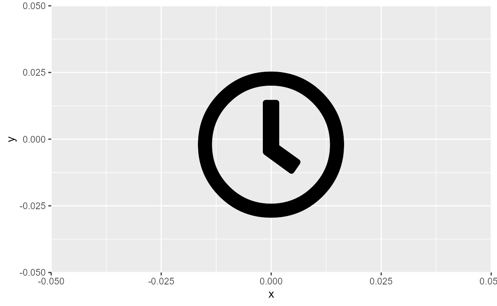
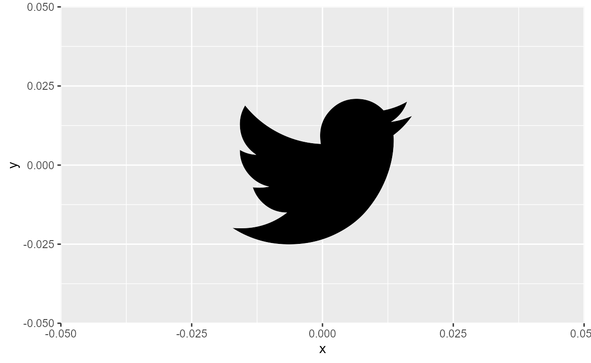
But what about rendering in the Solid variant? Font Awesome tells me that the Solid variant has a “cat” icon, so let’s try it.
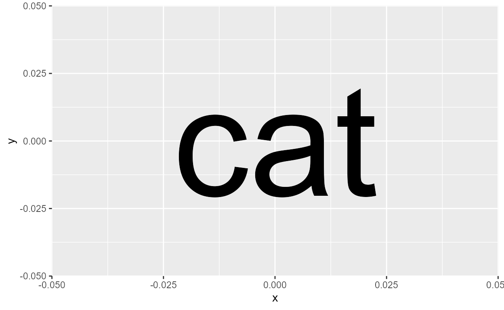
Uh oh, that didn’t work. Well that’s because Solid is actually a
style, not a family! If you go back to the output from
system_fonts(), we see that Font Awesome actually consists
of two font families: Font Awesome 5 Brands
which has a “Regular” style, and Font Awesome 5 Free
with a “Regular” style and a “Solid” style.
The structure is roughly like this:
Font Awesome 5 Free |--- Regular |--- Solid Font Awesome 5 Brands |--- Regular
In geom_text(), the font style is set by the
fontface argument. When we don’t specify
fontface, such as in our working example for the clock and
twitter icons, it defaults to the Regular style.10
So the solution to our problem is to put in
fontface = "Solid", right…?
Error in FUN(X[[i]], ...): invalid fontface solidWell now it just errors!11 The issue here runs a
bit deeper: if we track down the error,12
it takes us to a function inside grid::gpar() that
validates fontface. 13 If we take a look at
the code, we see that only a very few font styles are valid, and “solid”
isn’t one of them.
Okay, so then how can we ever access the Solid style of the Font
Awesome 5 Free family? Luckily, there’s a solution: use
systemfonts::register_font() to register the Solid style as
the “plain” style of its own font family!
We can do this by passing in the name of the new font family in the
name argument, and passing the path of the font file to the
plain argument.
fa_solid_path <- system_fonts() %>%
filter(family == "Font Awesome 5 Free", style == "Solid") %>%
pull(path)
systemfonts::register_font(
name = "Font Awesome 5 Free Solid",
plain = fa_solid_path
)
To check if we were successful in registering this new font variant,
we can call systemfonts::registry_fonts() which returns all
registered custom fonts in the current session:
systemfonts::registry_fonts() %>%
transmute(
family, style,
file = stringr::str_extract(path, "[\\w-]+\\.ttf$")
)
# A tibble: 4 × 3
family style file
<chr> <chr> <chr>
1 Font Awesome 5 Free Solid Regular Font-Awesome-5-Free-Solid-900.ttf
2 Font Awesome 5 Free Solid Bold Font-Awesome-5-Free-Solid-900.ttf
3 Font Awesome 5 Free Solid Italic Font-Awesome-5-Free-Solid-900.ttf
4 Font Awesome 5 Free Solid Bold Italic Font-Awesome-5-Free-Solid-900.ttfWe see that the Solid style is now available as the Regular (a.k.a. “plain”) style of its own font family: Font Awesome 5 Free Solid!14
Now we’re back to our cat icon example. Again, because Font Awewsome
says there’s a cat icon in the Solid style, we’d expect a cat icon
if we render the text “cat” in the Solid style. Let’s set the
family argument to our newly registered “Font Awesome 5
Free Solid” family and see what happens:
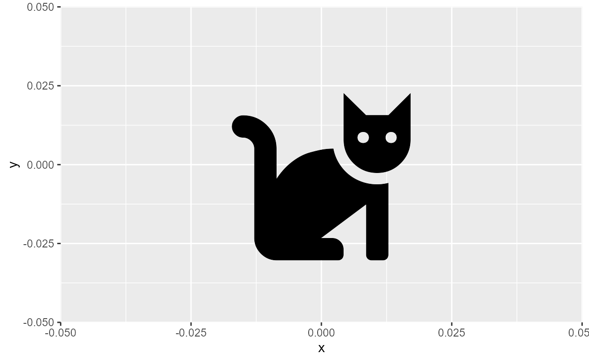
Third time’s the charm !!!
Hoisting font styles
Hopefully the lesson is now clear: to make a custom font work in R,
the font must be visible to
systemfonts::system_fonts() in a style that is accessible
to grid::gpar(). The nifty trick of registering an
inaccessible style as the “plain” style of its own family can
be extended and automated as a utility function that is called purely
for this side effect. In my experimental package, I
have very simple function called font_hoist()
which “hoists”15 all styles of a family as
the “plain”/Regular style of their own families. This way, you never
have to worry about things going wrong in the fontface
argument.
junebug::font_hoist()
font_hoist <- function(family, silent = FALSE) {
font_specs <- systemfonts::system_fonts() %>%
dplyr::filter(family == .env[["family"]]) %>%
dplyr::mutate(family = paste(.data[["family"]], .data[["style"]])) %>%
dplyr::select(plain = .data[["path"]], name = .data[["family"]])
purrr::pwalk(as.list(font_specs), systemfonts::register_font)
if (!silent) message(paste0("Hoisted ", nrow(font_specs), " variants:\n",
paste(font_specs$name, collapse = "\n")))
}
Let’s apply this to our Alegreya family. As we saw earlier, it has 12
styles, but only 4 can be accessed by grid::gpar().16 But once we hoist the styles, we
can access them all!
# install_github("yjunechoe/junebug")
junebug::font_hoist("Alegreya")
Hoisted 12 variants:
Alegreya Black Italic
Alegreya Bold
Alegreya Bold Italic
Alegreya ExtraBold
Alegreya ExtraBold Italic
Alegreya Italic
Alegreya Medium
Alegreya Medium Italic
Alegreya Regular
Alegreya SemiBold
Alegreya SemiBold Italic
Alegreya Black# Grab the newly registered font families
alegreya_styles <- systemfonts::registry_fonts() %>%
filter(str_detect(family, "Alegreya"), style == "Regular") %>%
pull(family)
# Render a plot for all 12 styles
purrr::walk(
alegreya_styles,
~ print(ggplot(NULL, aes(0, 0)) +
geom_text(aes(label = .x), size = 14, family = .x))
)
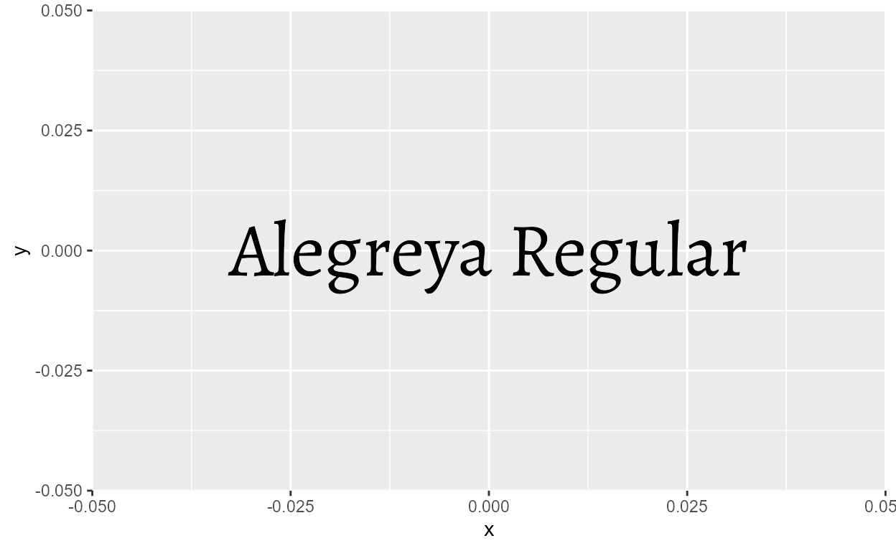
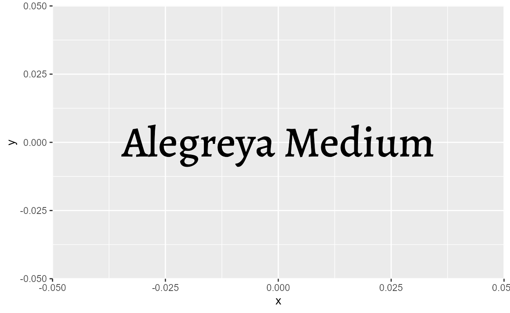
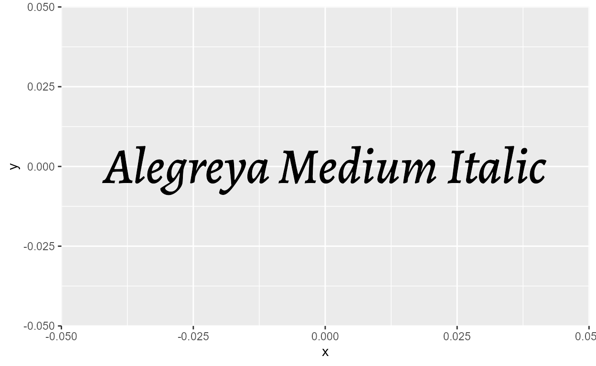
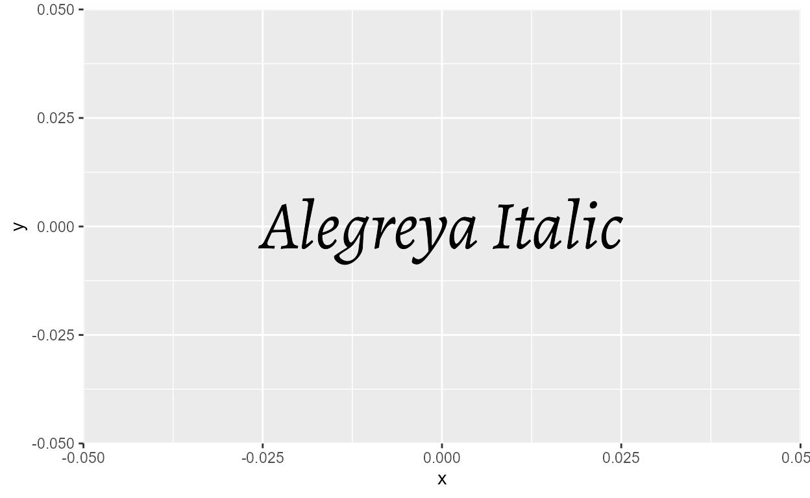
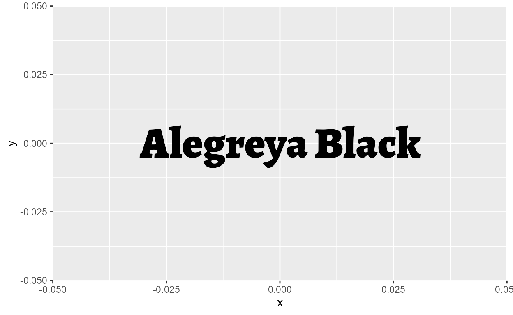
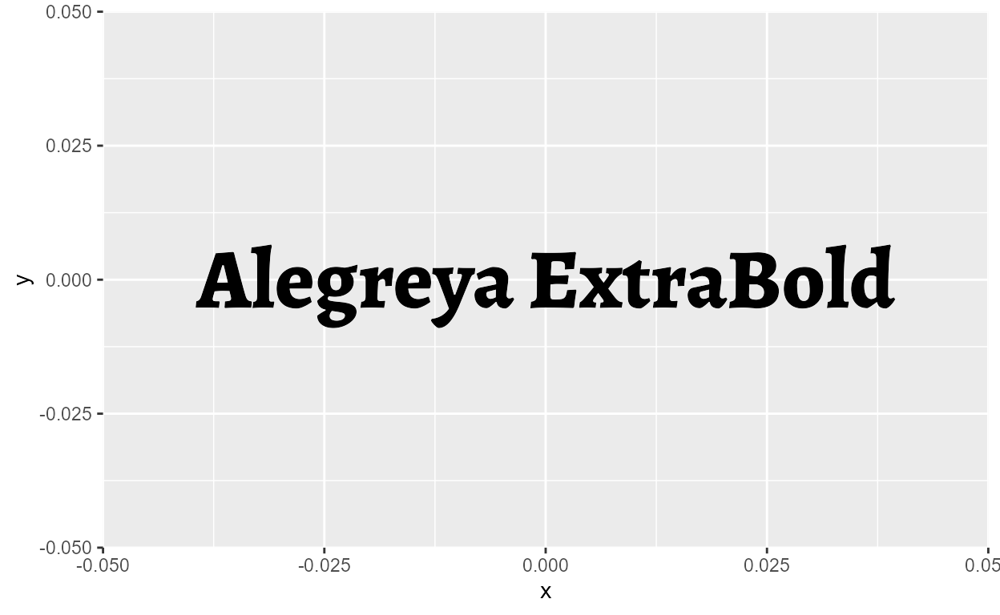
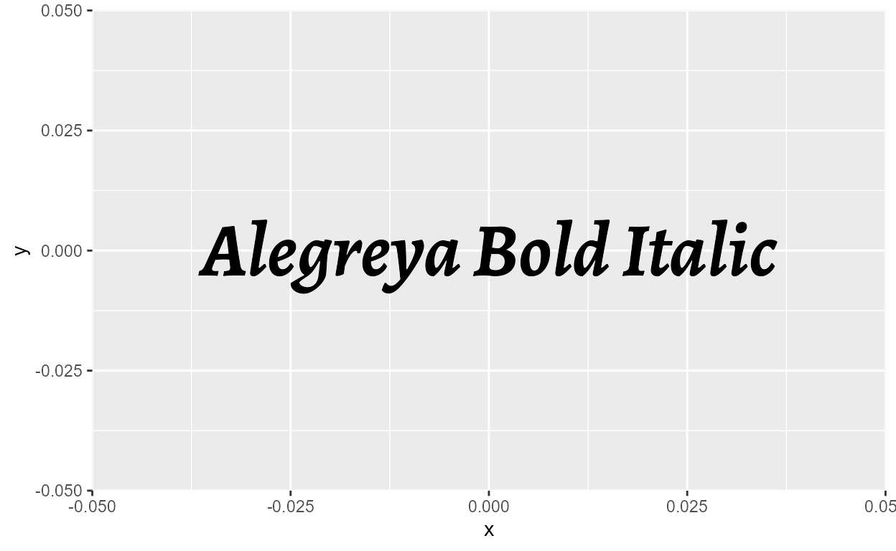
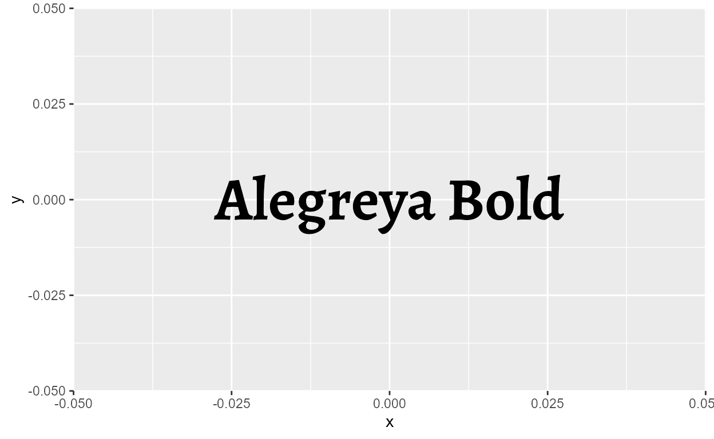
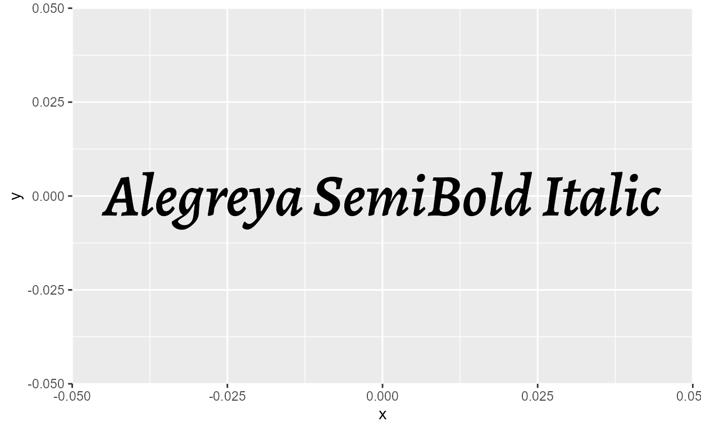
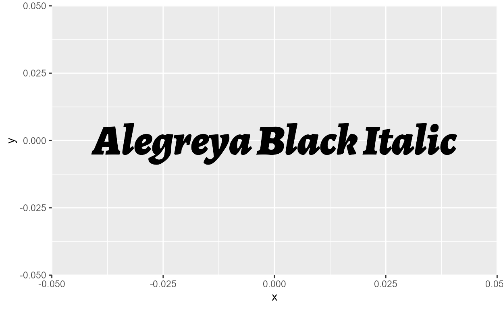
But note that the registration of custom font variants is not
persistent across sessions. If you restart R and run
registry_fonts() again, it will return an empty data frame,
indicating that you have no font variants registered. You have to
register font variants for every session, which is why it’s nice to have
the register_fonts() workflow wrapped into a function like
font_hoist().
Advanced font features
But wait, that’s not all!
Many modern professional fonts come with OpenType features, which mostly consist of stylistic parameters that can be turned on-and-off for a font. Note that despite being called “OpenType” features, it’s not something unique to .otf font formats. TrueType fonts (.ttf) can have OpenType features as well. For a fuller picture, you can check out the full list of registered features and this article with visual examples for commonly used features.
It looks overwhelming but only a handful are relevant for data visualization. I’ll showcase two features here: lining and ordinals.
Lining
One of the most practical font features is lining, also
called "lnum" (the four-letter feature tag), where all
numbers share the same height and baseline.17
Let’s use our Alegreya font as an example again. By default, Alegreya has what are called “old style” numbers, where number glyphs have ascending and descending strokes which can make a string of numbers look unbalanced. Notice how the digits share different baselines here:
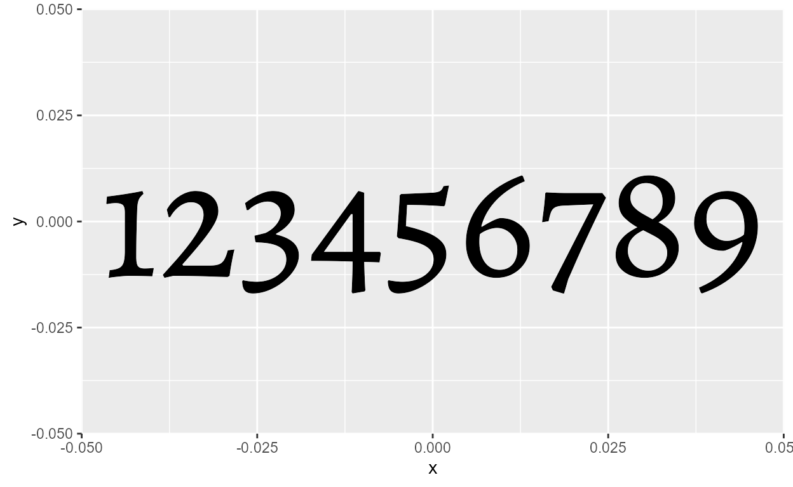
Luckily, Alegreya supports the “lining” feature. We know this because
the get_font_features() function from the
{textshaping} package returns a lists of OpenType features
supported by Alegreya, one of which is “lnum”.
library(textshaping)
get_font_features("Alegreya")
[[1]]
[1] "cpsp" "kern" "mark" "mkmk" "aalt" "c2sc" "case" "ccmp" "dlig" "dnom"
[11] "frac" "liga" "lnum" "locl" "numr" "onum" "ordn" "pnum" "sinf" "smcp"
[21] "ss01" "ss02" "ss03" "ss04" "ss05" "subs" "sups" "tnum"To access the lining feature, we can use the
systemfonts::register_variant() function, which works
similarly to systemfonts::register_font(). The former is
simply a wrapper around the latter, and we use it here for convenience
because “Alegreya” (as in, the default Regular style) is already
accessible without us having to point to the font file.
To turn the lining feature on, we need to set the
features argument of register_variant() using
the helper function systemfonts::font_feature(). The full
code looks like this:
systemfonts::register_variant(
name = "Alegreya-lining",
family = "Alegreya",
features = systemfonts::font_feature(numbers = "lining")
)
And again, we can see if the font variant was successfully registered
by checking registry_fonts():
# A tibble: 1 × 3
family style features
<chr> <chr> <chr>
1 Alegreya-lining Regular lnumAnd that’s it! Let’s try rendering the numbers again with the original “Alegreya” font (top) and the new “Alegreya-lining” variant (bottom):
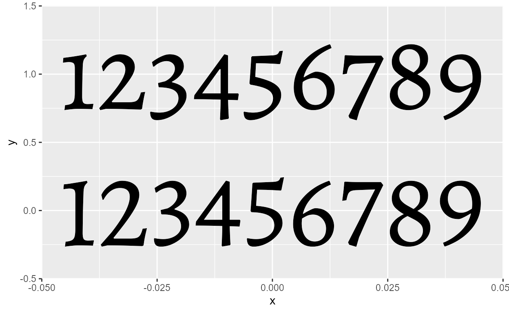
A subtle but noticeable difference!
If we want a font variant to have a mix of different style
and OpenType features, we have to go back to
register_font() (where we register styles as their own
families by pointing to the files) and set the features
argument there.
# Get file path
AlegreyaBlackItalic_path <- system_fonts() %>%
filter(family == "Alegreya", style == "Black Italic") %>%
pull(path)
# Register variant
register_font(
name = "Alegreya Black Italic-lining",
plain = AlegreyaBlackItalic_path,
features = font_feature(numbers = "lining")
)
ggplot(NULL) +
geom_text(
aes(0, 1, label = "123456789"),
size = 35, family = "Alegreya Black Italic"
) +
geom_text(
aes(0, 0, label = "123456789"),
size = 35, family = "Alegreya Black Italic-lining"
) +
scale_y_continuous(expand = expansion(add = 0.5))
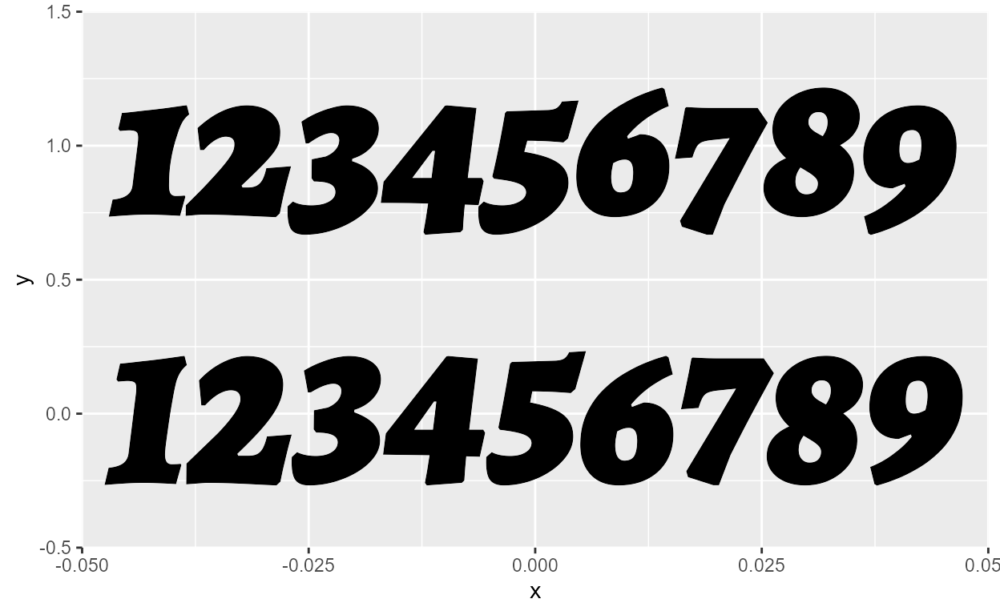
Ordinals
Ordinals (or “ordn”) is a font feature which works almost like a superscript. It targets all lower case letters, and is intended for formatting ordinals like 1st, 2nd, 3rd.
Let’s try it out!
First, we check that “ordn” is supported for Alegreya:
"ordn" %in% unlist(get_font_features("Alegreya"))
[1] TRUEThen, we register the ordinal variant. Note that “ordn” is not
built-in as an option for the letters argument of
font_features(), unlike “lnum” which is a built-in option
for the numbers argument.18
Therefore, we have to set the “ordn” feature inside the ...
of font_feature() with "ordn" = TRUE. And
let’s also simultaneously turn on the lining feature from before as
well.
# Register variant
register_variant(
name = "Alegreya-lnum_ordn",
family = "Alegreya",
features = font_feature(numbers = "lining", "ordn" = TRUE)
)
# Double check registration
registry_fonts() %>%
filter(family == "Alegreya-lnum_ordn", style == "Regular") %>%
pull(features)
[[1]]
ordn lnum
1 1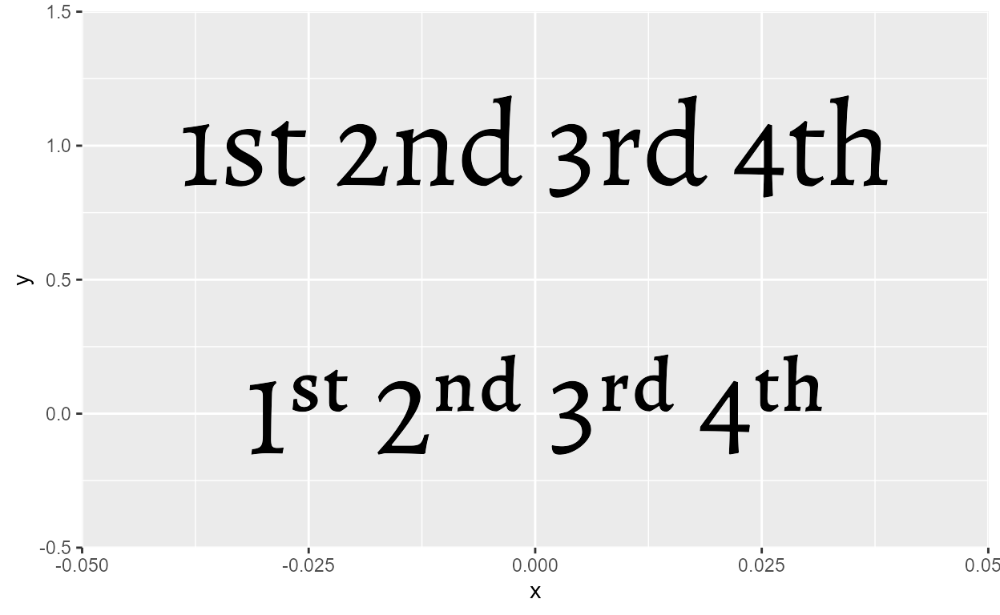
Again, it’s important to note that this targets all lower case letters. So something like this renders awkwardly:
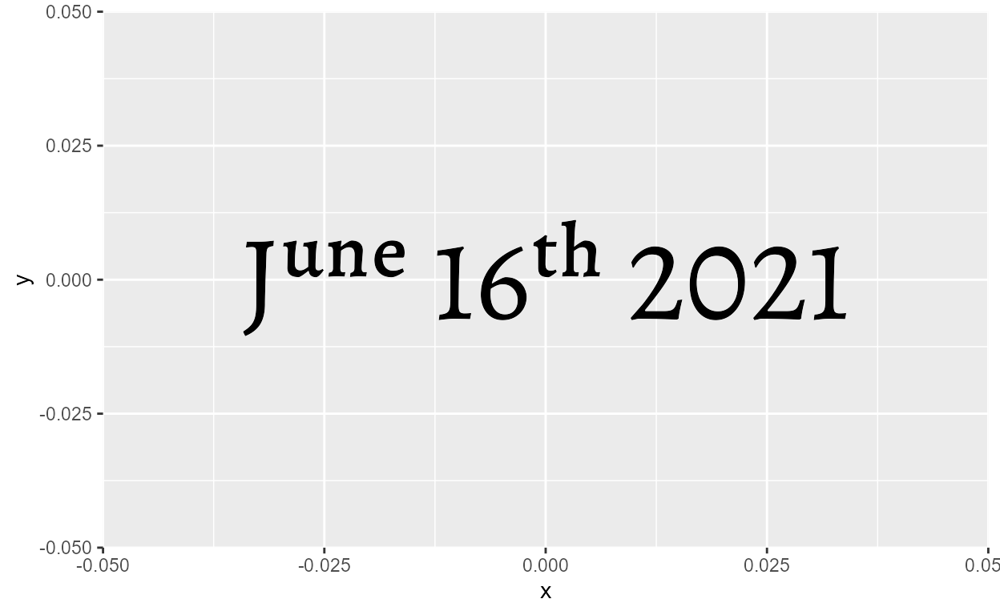
We could turn “June” into all caps, but that still looks pretty ugly:
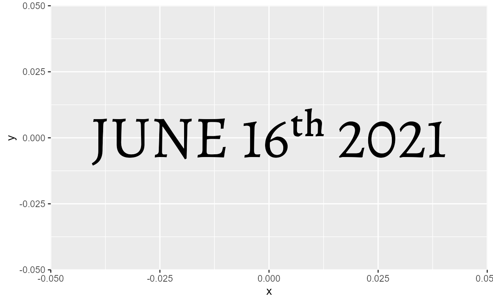
One solution is to render the month in the Regular style and the rest
in the ordinal variant.19 We can combine text in multiple
fonts in-line with html syntax supported by geom_richtext()
from {ggtext}. If you’re already familiar with
{ggtext}, this example shows that it works the same for
registered custom font variants!
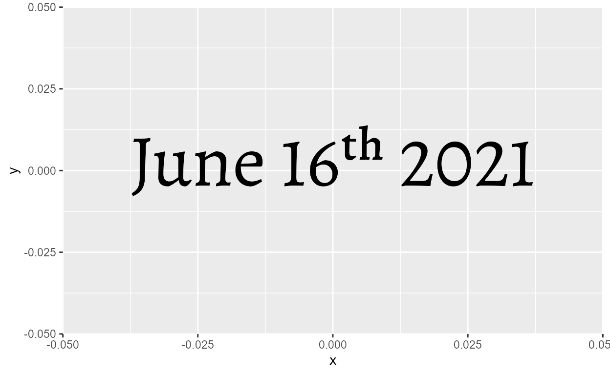
What’s extra nice about this is that while {ggtext}
already supports the <sup> html tag (which formats
text as superscript), it’s not as good as the ordinals font
feature. Look how the generic <sup> solution
(top) doesn’t look as aesthetically pleasing in comparison:
sups <- "1<sup>st</sup> 2<sup>nd</sup> 3<sup>rd</sup> 4<sup>th</sup>"
ggplot(NULL) +
geom_richtext(
aes(0, 1, label = sups),
size = 25, family = "Alegreya-lining",
fill = NA, label.color = NA
) +
geom_text(
aes(0, 0, label = "1st 2nd 3rd 4th"),
size = 25, family = "Alegreya-lnum_ordn"
) +
scale_y_continuous(expand = expansion(add = 0.5))
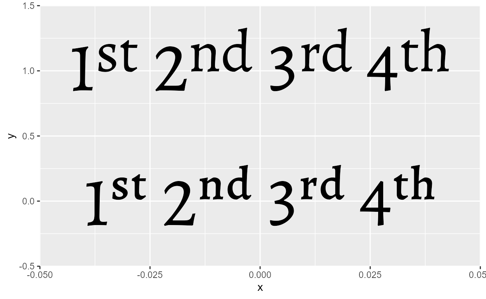
In my opinion, you should always err towards using the supported font features because they are designed with the particular aesthetics of the font in mind.20 Hopefully this example has convinced you!
Usecases
A mash-up
Here’s a made up plot that mashes up everything we went over so far:
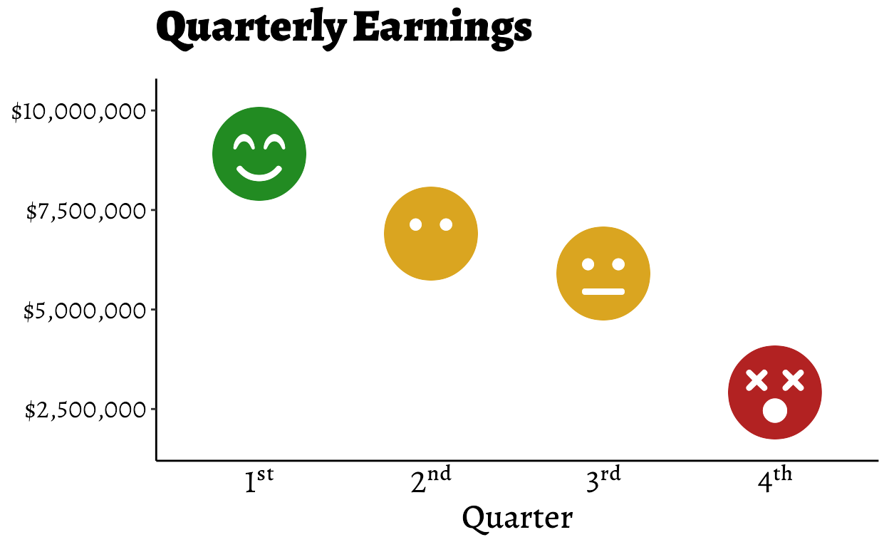
Plot Code
# Setting up fonts (repeat from above)
junebug::font_hoist("Font Awesome 5 Free")
junebug::font_hoist("Alegreya")
systemfonts::register_variant(
name = "Alegreya-lining",
family = "Alegreya",
features = systemfonts::font_feature(numbers = "lining")
)
systemfonts::register_variant(
name = "Alegreya-lnum_ordn",
family = "Alegreya",
features = systemfonts::font_feature(numbers = "lining", "ordn" = TRUE)
)
# labelling function for ordinal format
ordinal_style <- function(ordn) {
function (x) {
scales::ordinal_format()(as.integer(x)) %>%
stringr::str_replace(
"([a-z]+)$",
stringr::str_glue("<span style='font-family:{ordn}'>\\1</span>")
)
}
}
# data
set.seed(2021)
ordinal_data <- tibble(
Quarter = as.factor(1:4),
Earnings = c(9, 7, 6, 3) * 1e6
) %>%
arrange(desc(Earnings)) %>%
mutate(
Mood = c("smile-beam", "meh-blank", "meh", "dizzy"),
color = c("forestgreen", "goldenrod", "goldenrod", "firebrick")
)
# plot
ggplot(ordinal_data, aes(Quarter, Earnings)) +
geom_text(
aes(label = Mood, color = color),
size = 18, family = "Font Awesome 5 Free Solid"
) +
scale_color_identity() +
scale_y_continuous(
name = NULL,
labels = scales::label_dollar(),
expand = expansion(0.3)
) +
scale_x_discrete(
labels = ordinal_style("Alegreya-lnum_ordn")
) +
labs(title = "Quarterly Earnings") +
theme_classic() +
theme(
text = element_text(
size = 14,
family = "Alegreya"
),
axis.text.x = ggtext::element_markdown(
size = 18,
color = "black",
family = "Alegreya-lining"
),
axis.text.y = element_text(
size= 14,
color = "black",
family = "Alegreya-lining"
),
axis.ticks.x = element_blank(),
axis.title.x = element_text(
size = 18,
family = "Alegreya Medium"
),
plot.title = element_text(
size = 24,
family = "Alegreya Black",
margin = margin(b = 5, unit = "mm")
)
)
Icon fonts
If this blog post was your first time encountering icon fonts in R, you probably have a lot of questions right now about using them in data visualizations. You can check out my lightning talk on icon fonts that I gave at RLadies Philly for a quick overview as well as some tips & tricks!
Some extra stuff not mentioned in the talk:
{ragg}supports the rendering of colored fonts like emojis, which also means that it can render colored icon fonts.21 Icons don’t often come in colors, but one example is Google’s Material Icons font (Apache 2.0 license), which has a Two Tone style where icons have a grey fill in addition to a black stroke:22ggplot(NULL, aes(0, 0)) + geom_text( aes(label = "real_estate_agent"), size = 80, family = "Material Icons Two Tone" ) + theme_classic()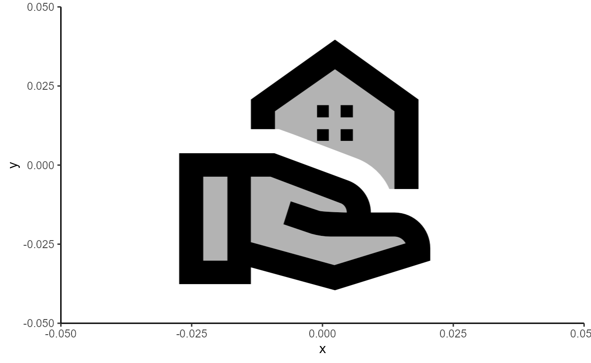
All fonts based on SVG (pretty much the case for all icon fonts) should work with
{ragg}as long as you can get it installed on your local machine. For example, the Bootstrap Icons font (MIT license) only come in .woff and .woff2 formats for web use, but it’s fundamentally just a collection of SVGs, so it can be installed on your local machine once you convert it to .ttf. Then it should just work right out of the box.If you’re design oriented, you can also make your own icon font for use in R. In Inkscape, you can do this in File > New From Template > Typography Canvas (here’s a guide). Once you save your SVG font, you can convert it to .ttf and follow the same installation process, and then it should be available in R if you render with
{ragg}.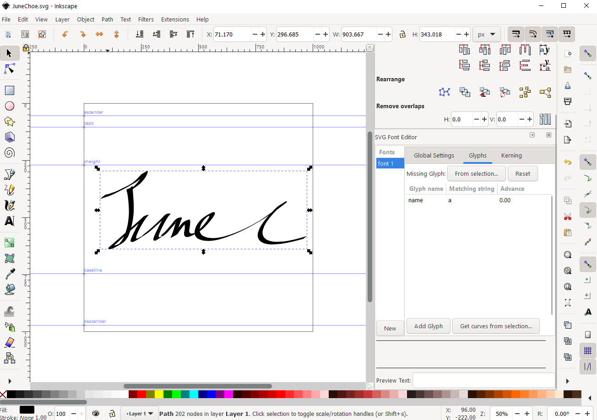
Figure 6: Making a font in Inkscape
For example, here’s my super quick attempt (took me exactly 1 minute) at a one-glyph font that just contains my signature (and you could imagine a usecase where you put this in a corner of your data viz to sign your work):
WTF?
@yutannihilat_en
has a thread
about how if you pass in a character to the shape argument
of geom_point(), it acts like geom_text():
ggplot(NULL, aes(x = 0, y = 0)) +
geom_point(
shape = "あ",
size = 50
)
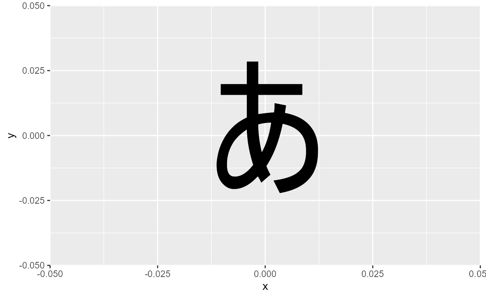
Naturally, I wondered if changing the font family affects how the
character glyph is rendered. geom_point() doesn’t take a
family argument, but we can try it out directly in grid by
setting fontfamily to a custom font:
ggplot(NULL, aes(x = 0, y = 0)) +
geom_point(
shape = "あ",
size = 50
) +
expand_limits(x = c(-.2, .5)) +
annotation_custom(
grid::pointsGrob(
pch = "あ",
x = .7, y = .5,
gp = grid::gpar(fontfamily = "Noto Sans JP", fontsize = 50 * .pt))
)
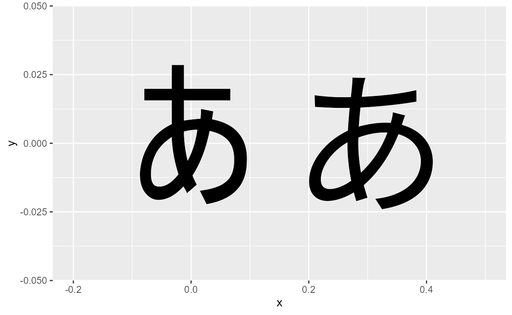
Emojis work this way:
ggplot(NULL, aes(x = 0, y = 0)) +
geom_point(
shape = emo::ji("smile"),
size = 50
)
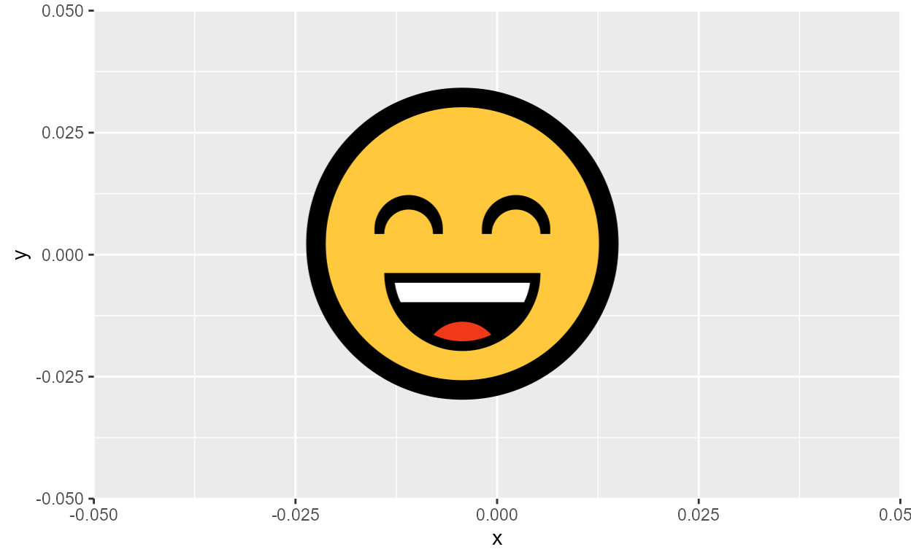
And so do icon fonts, when shape/pch is supplied as Unicode:
ggplot(NULL) +
annotation_custom(
grid::pointsGrob(
pch = "\UF118",
x = .5, y = .5,
gp = grid::gpar(
fontfamily = "Font Awesome 5 Free",
fontsize = 50 * .pt
)
)
)
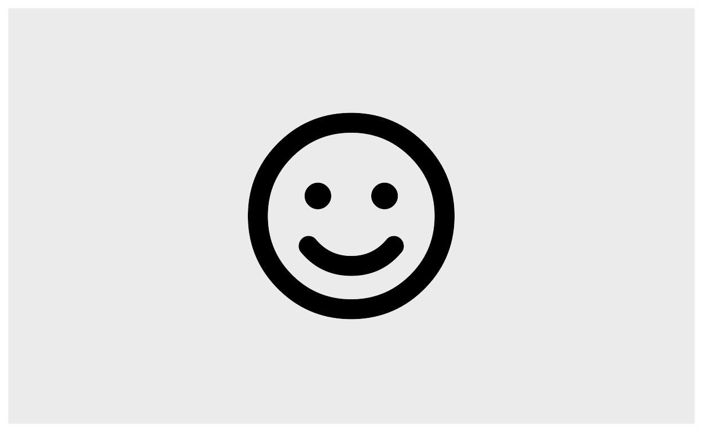
Note sure what you’d use this for but and hey it works
More by others
An extremely detailed step-by-step video walkthrough of using custom fonts in R by @dgkeyes.
The {hrbragg} package by @hrbrmstr for more utility functions for registering font variants and typography-centered ggplot2 themes.
The text formatting chapter of Practical Typography by Matthew Butterick for a general guideline on using different font features.
Everything from Thomas Lin Pedersen, the main person responsible for these developments.
Many #TidyTuesday submissions.
Official RStudio blog posts:
Session info
Session Info
R version 4.2.0 (2022-04-22 ucrt)
Platform: x86_64-w64-mingw32/x64 (64-bit)
Running under: Windows 10 x64 (build 19044)
Matrix products: default
locale:
[1] LC_COLLATE=English_United States.utf8
[2] LC_CTYPE=English_United States.utf8
[3] LC_MONETARY=English_United States.utf8
[4] LC_NUMERIC=C
[5] LC_TIME=English_United States.utf8
attached base packages:
[1] stats graphics grDevices utils datasets methods base
other attached packages:
[1] ggtext_0.1.1 textshaping_0.3.6 stringr_1.4.0 dplyr_1.0.9
[5] systemfonts_1.0.4 ggplot2_3.3.6 knitr_1.39
loaded via a namespace (and not attached):
[1] tidyselect_1.1.2 xfun_0.31 bslib_0.3.1 purrr_0.3.4
[5] colorspace_2.0-3 vctrs_0.4.1 generics_0.1.2 htmltools_0.5.2
[9] emo_0.0.0.9000 yaml_2.3.5 utf8_1.2.2 rlang_1.0.2
[13] gridtext_0.1.4 jquerylib_0.1.4 pillar_1.7.0 glue_1.6.2
[17] withr_2.5.0 DBI_1.1.2 lifecycle_1.0.1 munsell_0.5.0
[21] junebug_0.0.0.9000 gtable_0.3.0 ragg_1.2.2 memoise_2.0.1
[25] evaluate_0.15 labeling_0.4.2 fastmap_1.1.0 markdown_1.1
[29] fansi_1.0.3 highr_0.8 Rcpp_1.0.8.3 scales_1.2.0
[33] cachem_1.0.1 jsonlite_1.8.0 farver_2.1.0 distill_1.4
[37] png_0.1-7 digest_0.6.29 stringi_1.7.6 grid_4.2.0
[41] cli_3.3.0 tools_4.2.0 magrittr_2.0.3 sass_0.4.1
[45] tibble_3.1.7 crayon_1.5.1 pkgconfig_2.0.3 downlit_0.4.0.9000
[49] ellipsis_0.3.2 xml2_1.3.3 data.table_1.14.3 lubridate_1.8.0
[53] assertthat_0.2.1 rmarkdown_2.14 rstudioapi_0.13 R6_2.5.1
[57] compiler_4.2.0Footnotes
In fact, text rendering as a whole is an incredibly complicated task. Check out Text Rendering Hates You for a fun and informative read.↩︎
I’m focusing on outputing to bitmap (e.g.,
.png,.jpeg,.tiff). For other formats like SVG (which I often default to for online material), you can usesvglite- read more on the package website.↩︎Check out the discussion on this issue and this commit. There’s also been some talk of making AGG the default renderer, though I don’t know if that’s been settled.↩︎
These are used to calculate DPI (dots per inch). Resolution is in pixels, so
res=150andunits="inch"is the same asdpi=150.{ragg}devices don’t have adpiargument like the default device, so you have to specify both resolution and units.↩︎in Windows 10, for example, you have to drag and drop fonts onto the “Fonts” section of Settings↩︎
Variable fonts are hit-or-miss because while
{ragg}and{systemfonts}do support some variable font features (see the section on Advanced font features), “variable” can mean many different things, some of which are not supported (e.g., variable width). If you install a variable font, it might render with{ragg}but you’re unlikely to be able to tweak its parameters (like change the weight, for example).↩︎In my experience, though, static fonts tend to be .ttf and variable fonts tend to be .otf.↩︎
“You can use them freely in your products & projects - print or digital, commercial or otherwise. However, you can’t sell the fonts on their own.”↩︎
Again, YMMV, but myself and a couple other folks I’ve talked to share this.↩︎
Technically, it defaults to
fontface = "plain"which is the same thing, but{systemfonts}and (also probably your OS) calls it the “Regular” style↩︎In case you’re wondering, it still errors with “solid”, no caps.↩︎
options(error = recover)is your friend! And remember to setoptions(error = NULL)back once you’re done!↩︎You might wonder: what’s the
{grid}package doing here? Well,{grid}is kinda the “engine” for{ggplot2}that handles the actual “drawing to the canvas”, which is why it’s relevant here. For example,geom_text()returns a Graphical object (“Grob”), specificallygrid::textGrob(), that inherits arguments likefamilyandfontface(which are in turn passed intogrid::gpar(), wheregparstands for graphical parameters).↩︎The same font file also registered as the Bold, Italic, and Bold Italic styles of the family as well, which is what happens by default if you only supply the
plainargument toregister_font().↩︎Borrowing terminology from
tidyr::hoist(), the under-appreciated beast of list-column workflows↩︎Regular as “plain”, Bold as “bold”, Italic as “italic”, and Bold Italic as “bold.italic”.↩︎
Also check out the related “pnum” (proportional numbers) and “tnum” (tabular numbers) features.↩︎
check the help page
?systemfonts::font_featurefor details.↩︎Another solution would be to use the small-cap variant (the “smcp” feature) for “une”.↩︎
But this also means that not all fonts support “ordn”, while
<sup>is always available.↩︎But not all colored fonts, in my experience.↩︎
The colors are fixed though - they come colored in black and filled in grey.↩︎
Citation
@online{choe2021,
author = {Choe, June},
title = {Setting up and Debugging Custom Fonts},
date = {2021-06-24},
url = {https://yjunechoe.github.io/posts/2021-06-24-setting-up-and-debugging-custom-fonts/},
langid = {en}
}